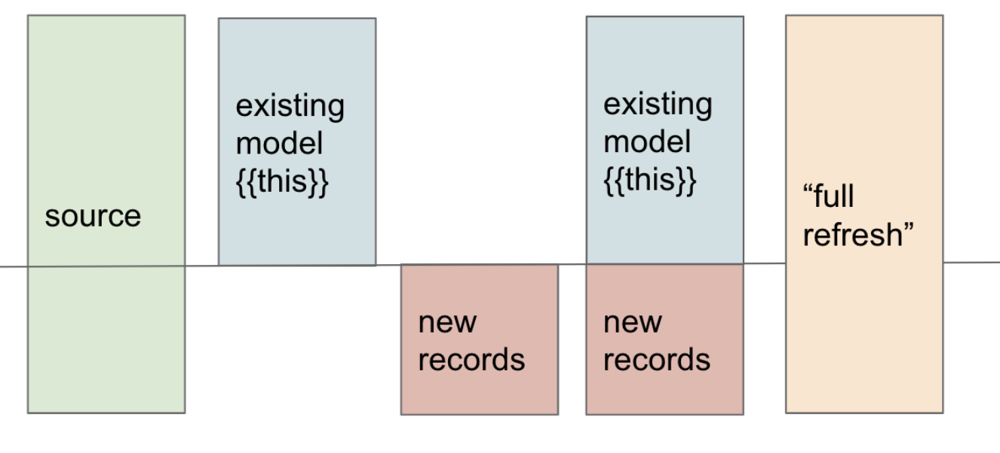

Every dbt model is a select. The question dbt asks at build time is: what should I do with the result? The answer is the model’s materialization. Stage 1 set folder-level defaults (staging/ → view, marts/ → table) and Stage 4 introduces the per-model override and the two non-trivial strategies — ephemeral and incremental.
| Materialization | What dbt does on each run | Where it lives | Read perf | Build cost | When to pick |
|---|---|---|---|---|---|
view |
create or replace view ... |
Warehouse object — pointer to the SQL | Slow (re-runs SQL on every query) | Fast (no data movement) | Default starting point. Light staging, simple transforms. |
table |
create or replace table ... as ... |
Warehouse object — physical rows | Fast | Slow on big data | Marts, BI-queried models, anything queried often |
ephemeral |
Nothing — inlined as a CTE in downstream models | Not in the warehouse | n/a | Free | Light intermediate logic used by 1–2 downstream models |
materialized_view |
create materialized view ... (warehouse manages refresh) |
Warehouse object | Fast | Auto-refresh per warehouse | Snowflake / BigQuery / Postgres only — not DuckDB |
incremental |
First run = create as ..., later runs = insert only the new rows |
Warehouse table | Fast | Cheap on later runs | Big append-only event tables, when full rebuilds become slow |
Three places, in increasing precedence:
dbt_project.yml folder default — Stage 1’s models: dbt_project: staging: +materialized: view. Lowest priority.{% config %} in YAML schema files — under a model entry, you can set config: { materialized: table }. Mid priority.{{ config(materialized='table') }} block at the top of the SQL file — highest priority. Overrides both above.The SQL-level config is the override learners reach for first because it lives next to the model — readers see the materialization choice at the same time they see the SQL.
{{ config(materialized='table') }}
select ... from {{ ref('foo') }}
dbt parses every model file looking for these blocks and stores the result in target/manifest.json under nodes.<unique_id>.config.materialized. That’s the value the verifier checks.
view is the defaultA view is the cheapest thing dbt can build — just a saved query. Switching it to a table only matters when:
Don’t pre-materialize as table just because. Start with view; promote when there’s a real performance reason.
ephemeral actually doesAn ephemeral model is not built. It has no warehouse object — no view, no table, nothing in information_schema.tables. Instead, when a downstream model references it via {{ ref('the_ephemeral') }}, dbt inlines the ephemeral’s query as a CTE in the downstream’s compiled SQL.
So an ephemeral chain like stg_a → int_b (ephemeral) → fct_c produces compiled SQL for fct_c that looks like:
with __dbt__cte__int_b as (
select ... from "main"."stg_a" ...
)
select ... from __dbt__cte__int_b ...
Wins: - No clutter in the warehouse - No per-build cost for the intermediate
Costs: - Can’t query the ephemeral directly in the warehouse for debugging - Can’t attach generic tests to columns of an ephemeral (they’d need a real relation to query) - Refactoring an ephemeral to a table is a small cost shift; refactoring once you have many downstream consumers is more painful
Rule of thumb: if more than 1–2 models use it, or if you ever want to query it during debugging, make it a regular table or view.
incremental actually doesincremental is the materialization for append-only big tables — event streams, log lines, append-style CDC. The model’s SQL has an extra block:
{{ config(materialized='incremental') }}
select * from {{ ref('events_raw') }}
{% if is_incremental() %}
where event_time > (select max(event_time) from {{ this }})
{% endif %}
is_incremental() is a Jinja macro that returns true when all of:
- The target table already exists in the warehouse
- --full-refresh was not passed
- The model’s config has materialized='incremental'
First run: is_incremental() is false (no table yet), the filter is skipped, dbt does create table ... as select <full query>. Every run after: is_incremental() is true, the filter eliminates already-loaded rows, dbt does insert into ... select <filtered query> (with strategy-specific variations — merge upserts, append blindly inserts, etc.).
You’ll learn the full mechanics over the next two exercises. The thing to internalize now: incremental is the only materialization where the SQL itself changes shape based on warehouse state.
table everywhere because it’s faster to query. Tables get rebuilt on every dbt run. A table that takes 5 minutes to rebuild and gets queried every 30 seconds may still be the right choice — but a table that takes 30 minutes to rebuild and gets queried once a day is wasted money.ephemeral for models with generic tests. dbt won’t let you attach unique / not_null to an ephemeral’s columns — there’s no relation to query. If you’ve added tests, the model has to be at least a view.{{ config() }} block below the select. It must be at the top of the file. Below the SQL, it’s just text inside the query and dbt ignores it.Press n to start the first exercise.